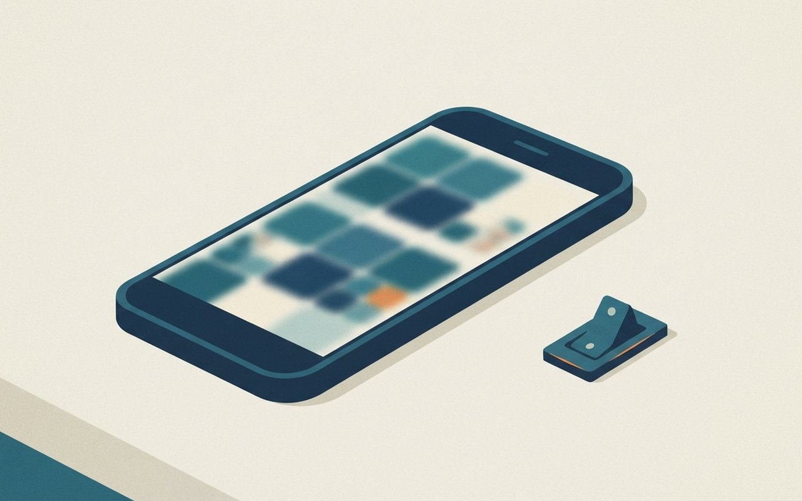
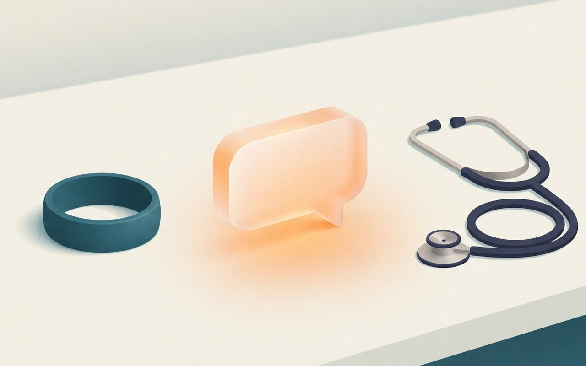

🎧 낭독 원고 보기
11월 16일 월요일, AI 브리프입니다. 지난 한 주 쌓인 테크 소식 여섯 가지를 전해 드립니다.
10월 ICT 수출이 1년 전의 세 배가 됐습니다. 703억 5천만 달러로 202퍼센트 늘어, 월간 증가율이 처음 200퍼센트를 넘었습니다. 반도체가 그중 80퍼센트를 차지했고, 메모리는 360퍼센트 늘었습니다. 다만 중소·중견기업 ICT 수출은 10.3퍼센트 증가에 그쳤습니다.
Anthropic이 Claude Fable 5.2와 Mythos 5.2를 공개했습니다. Fable 5.2의 값은 100만 토큰당 입력 8달러, 출력 40달러이고, 테스터 측정으로 출력 속도는 이전 5.1보다 최대 30퍼센트 빨라졌습니다. 회사 측정으로 코딩 시험 FrontierSWE v2에서 69.9퍼센트를 기록했습니다. 사이버·생물 분류기가 막은 질문에는 예전 Opus 모델이 대신 답합니다.
오픈AI가 AI 에이전트가 쓰는 챗GPT 월렛을 공개했습니다. 비자, 마스터카드, 아메리칸익스프레스 카드를 등록하면 실제 카드번호 대신 토큰으로 결제하고, 살 때마다 지문이나 얼굴로 승인합니다. 미국의 만 18세 이상 프로 구독자부터입니다. 같은 주 유나이티드항공은 AI 에이전트를 통한 항공권 예약을 막겠다고 밝혔습니다.
이탈리아 개인정보보호 당국이 메타에 8억 500만 유로의 과징금을 매겼습니다. 페이스북 앱이 동의 없이 안드로이드 사진첩에 접근했다는 판단입니다. 메타는 60일 안에 별도 동의 절차를 두고 기본값을 꺼야 하며, 항소할 방침입니다.
AI 모델 호스팅 회사 파이어웍스가 해킹당한 여파로 우버 운전자들의 면허 정보가 유출됐습니다. 테크크런치에 따르면 사우스캐롤라이나에서만 3,430명입니다. 파이어웍스의 고객은 1만 곳이 넘고, 노션도 연결을 끊었습니다.
마지막으로, 스마트 반지 회사 오우라가 AI 1차 진료 회사 카운슬 헬스를 현금 6억 2,500만 달러에 사기로 했습니다. 카운슬은 반지를 쓰지 않는 사람에게도 진료를 계속 제공합니다.
지금까지 11월 16일 AI 브리프였습니다. 자세한 내용과 출처는 카드뉴스에서 확인하세요.
輸
반도체 · 메모리
10월 ICT 수출 703억 5천만 달러, 1년 새 202% 증가 — 월간 증가율 처음 200% 넘어, 반도체가 80.3%
과학기술정보통신부와 산업통상부는 15일 10월 ICT 수출이 703억 5,000만 달러로 1년 전(232억 9,000만 달러)보다 202.0% 늘어 약 3배가 됐다고 발표했다(ZDNet Korea). 10월 기준 역대 최대이고 월간 증가율로는 사상 최고다. 증가율은 8월 162.6%, 9월 195.8%에 이어 커졌다. 금액은 9월(751억 4,000만 달러)이 더 컸다.
반도체가 564억 7,000만 달러(+259.4%)로 ICT 수출의 80.3%다. 메모리는 501억 4,000만 달러로 360.5% 늘었다(뉴스1). SSD는 584.3%, 대미 ICT 수출은 522.4% 늘었다. 반면 중소·중견기업 ICT 수출은 56억 1,000만 달러로 10.3% 증가에 그쳤다(ZDNet Korea).
- ICT 수출(10월)703억 5,000만 달러 · +202.0% · 1년 전 232억 9,000만 달러
- 증가율 추이8월 162.6% · 9월 195.8% · 10월 202.0%
- 반도체564억 7,000만 달러 · +259.4% · ICT의 80.3% · 메모리 501억 4,000만 달러(+360.5%)
- 그 밖SSD 56억 4,000만 달러(+584.3%) · 대미 155억 6,000만 달러(+522.4%)
- 중소·중견56억 1,000만 달러 · +10.3%
🤖 알고 보면 달라지는 것
전체가 세 배가 되는 동안 중소·중견기업 수출은 10% 남짓 늘었다. 호황이 대기업 메모리에 몰려 있다는 뜻이다. '역대 최대'라는 말 뒤에서 누가 얼마나 벌었는지를 나눠 봐야 한다.
ZDNet Korea — 10월 ICT 수출 뉴스1 — 메모리 수출 뉴스핌 — ICT 수출 202%
ZDNet Korea(11/15 11:00)·뉴스1(11/15 11:00)·뉴스핌 · 총액·증가율은 세 매체 일치, 추이·중소중견·SSD·대미는 ZDNet Korea, 메모리는 뉴스1 기준 (확인 2026-11-16)
ICT 수출 1년 새 3배,
증가율 처음 200% 넘어
10월 ICT 수출이 703억 5천만 달러로 202% 늘었어요. 반도체가 80.3%를 차지했지만 중소·중견기업 수출은 10.3% 증가에 그쳤어요.
8월:162.6|9월:195.8|10월:202.0
ICT 수출 증가율(1년 전 대비) · 반도체가 80.3%
價
모델 · 5.2 버전
Anthropic 'Claude Fable 5.2' 공개 — 100만 토큰당 출력 40달러, 출력 속도 최대 30% 향상
Anthropic이 9일(미국) Claude Fable 5.2와 Mythos 5.2를 공개했다. 둘은 같은 기반 모델이고 안전장치와 이용 범위가 다르다. Fable은 모든 이용자에게, Mythos는 사이버보안·생명과학 분야 검증 기관에만 제공된다(Anthropic). 값은 100만 토큰당 입력 8달러, 출력 40달러이고, 패스트 모드는 16달러·80달러에 생성 속도가 최대 2.5배다. 테스터 측정으로 출력 속도는 5.1보다 최대 30% 빠르다. 5.1은 입력 10달러·출력 50달러였다(Implicator).
회사 자체 측정으로 Opus 5.5와 비교하면 FrontierSWE v2 69.9% 대 62.3%, OSWorld 2.1 89.3% 대 87.2%, HLE(도구 허용) 74.2% 대 67.7%다. Fable의 분류기가 막은 질문은 예전 모델(사이버는 Opus 4.8, 생물은 Opus 5)이 대신 답하며, 차단은 5.1보다 약 55% 줄었다. SD Times는 Anthropic이 대부분의 코딩·지식 작업에는 여전히 Opus 5.5를 권한다고 전했다.
- 공개9일(미국) · Fable 5.2(모든 이용자) · Mythos 5.2(검증 기관)
- 값(100만 토큰)입력 8달러 · 출력 40달러 · 패스트 모드 16달러·80달러(최대 2.5배 빠름) · 5.1은 10달러·50달러
- 속도출력 속도 5.1 대비 최대 30% 향상
- 벤치마크(대 Opus 5.5)코딩 FrontierSWE v2: 69.9% 대 62.3% · PC 조작 OSWorld 2.1: 89.3% 대 87.2% · 도구 사용 HLE: 74.2% 대 67.7%
- 안전장치분류기 차단 질문은 예전 Opus가 대신 답변 · 차단 약 55% 감소
- 확인 한계벤치마크·안전장치는 회사 자체 발표 · 5.1 값은 Implicator 기준 ⚠ 변동 가능
🤖 알고 보면 달라지는 것
막힌 질문을 아예 거절하지 않고 이전 모델로 넘겨 답하는 구조다. 이용자는 답을 받지만, 어떤 모델이 답했는지는 같지 않을 수 있다. 값이 내려가도 회사가 일반 코딩에는 여전히 Opus 5.5를 권한다는 점은 함께 봐야 한다.
Anthropic — Fable·Mythos 5.2 SD Times — 5.2 공개 Implicator — 5.1 값
Anthropic(11/9, 11/11 수정)·SD Times(11/9)·Implicator(2026-09-01) · 값·속도는 Anthropic·SD Times 일치, 벤치마크·분류기는 Anthropic 발표, Opus 5.5 권장은 SD Times 기준 (확인 2026-11-16)
Claude Fable 5.2,
출력 값 50→40달러
Anthropic이 Claude Fable 5.2를 공개했어요. 100만 토큰당 출력 값이 40달러로 내려갔고 출력 속도는 최대 30% 빨라졌어요.
Fable 5.2|Opus 5.5 / 코딩:69.9:62.3 / 도구 사용:74.2:67.7 / PC 조작:89.3:87.2
회사 자체 측정 · 일반 코딩은 Opus 5.5 권장(SD Times)
財
에이전트 · 결제
오픈AI '챗GPT 월렛' — AI 에이전트가 카드 3사로 결제, 같은 주 유나이티드항공은 AI 예약 제한 예고
오픈AI가 13일(현지) AI 에이전트와 연동되는 챗GPT 월렛을 공개했다. 협력 카드사는 비자·마스터카드·아메리칸익스프레스 3곳이고, 대상은 미국의 만 18세 이상 프로 구독자다(아주경제). 카드는 한 번만 등록하고, 결제망이 실제 카드번호 대신 토큰을 발급해 판매처와 AI는 카드번호를 받지 않는다. 구매마다 지문·얼굴 인증으로 승인한다(ZDNet Korea).
앞으로는 미리 정한 한도·품목·기간 안에서 건별 승인 없이 결제하는 기능을 넣을 예정이다. 반대로 유나이티드항공은 12일 제3자 AI 에이전트를 통한 항공권 예약·관리를 제한하겠다고 밝혔다. 로그인 정보 공유에 따른 보안 위험과, 탑승 수속·금지물품 확인을 사람이 직접 해야 한다는 연방 규정을 이유로 들었다(TechCrunch).
- 공개13일(현지) · 챗GPT 월렛
- 카드사비자 · 마스터카드 · 아메리칸익스프레스(3곳)
- 대상미국 만 18세 이상 프로 구독자 · 순차 제공
- 방식카드번호 대신 토큰 · 구매마다 생체 인증 · 한도 안 자동 결제는 예정
- 반대 흐름유나이티드항공 12일 AI 에이전트 예약 제한 발표(보안·연방 규정)
- 확인 한계월렛 세부는 국내 매체 보도 기준 · 오픈AI 공식 발표 원문 미열람 ⚠ 변동 가능
🤖 알고 보면 달라지는 것
AI가 '결제할 수 있게' 된 바로 그 주에 대형 항공사는 'AI 예약 제한'을 예고했다. 결제는 카드사가 토큰으로 막을 수 있지만, 사람이 직접 해야 하는 절차는 규정이 막는다. AI 쇼핑이 퍼지는 속도는 기술보다 이런 규칙이 정한다.
아주경제 — 챗GPT 월렛 ZDNet Korea — 결제 방식 TechCrunch — 유나이티드 AI 예약 제한
아주경제(11/14 10:01)·ZDNet Korea(11/15 12:11)·TechCrunch(11/12 09:17 PST) · 카드사·대상은 아주경제·ZDNet Korea 일치, 토큰·예정 기능은 ZDNet Korea, 유나이티드는 TechCrunch 기준 (확인 2026-11-16)
AI가 카드로 결제한다,
'챗GPT 월렛' 공개
오픈AI가 AI가 카드로 결제하는 챗GPT 월렛을 냈어요. 카드번호 대신 토큰을 쓰고 살 때마다 생체 인증해요. 같은 주 유나이티드항공은 AI 예약을 막겠다고 했어요.
챗GPT 월렛|토큰 결제 · 생체 승인|비자·마스터·아멕스
3곳|협력 카드사
같은 주 유나이티드항공은 AI 예약 제한 예고
An abstract shopping cart made of soft glowing lines beside a payment card shape and a fingerprint symbol, conceptual illustration, no text, no logos, no people
罰
규제 · 이탈리아
이탈리아, 메타에 과징금 8억 500만 유로 — 페이스북 앱이 안드로이드 사진첩에 동의 없이 접근, 60일 안에 기본값 꺼야
이탈리아 개인정보보호 당국이 14일(현지) 메타에 8억 500만 유로(약 1조 1,890억 원) 과징금을 부과했다. 페이스북 앱이 동의 없이 안드로이드 스마트폰의 사진·동영상·메타데이터에 접근했고 이를 충분히 알리지 않았다는 판단이다. 영향받은 이용자는 약 2,000만 명으로 추산되고, 과징금은 메타 전체 매출의 약 0.47%다(ZDNet Korea).
당국은 60일 안에 '갤러리 추천' 기능에 별도 동의 절차를 두고, 이용자가 직접 켜기 전까지 기본값을 꺼 두라고 명령했다. 메타는 당국 판단에 동의하지 않고 과징금이 과도하다며 항소할 계획이다(ZDNet Korea·뉴스1).
- 과징금8억 500만 유로 · 약 1조 1,890억 원(ZDNet Korea 환산) · 메타 매출의 약 0.47%
- 사유안드로이드 사진·동영상·메타데이터 무단 접근 · 고지 부족
- 영향이용자 약 2,000만 명(추산)
- 시정 명령60일 안에 별도 동의 · 기본값 꺼짐
- 메타항소 방침
- 확인 한계원화 환산액은 매체마다 다름 · 당국 성명 원문 미열람
🤖 알고 보면 달라지는 것
문제가 된 것은 기능 자체보다 '처음부터 켜져 있던' 기본값이다. 당국이 요구한 것도 별도 동의와 기본 꺼짐이다. 사진첩을 읽는 AI 추천 기능이 늘수록 '기본값을 어떻게 두느냐'가 규제의 핵심이 된다.
ZDNet Korea — 메타 과징금 뉴스1 — 메타 항소 방침
ZDNet Korea(11/15 12:20)·뉴스1(11/15 13:47) · 과징금은 두 매체 일치, 이용자 수·매출 비중·시정 명령은 ZDNet Korea(외신 인용) 기준 (확인 2026-11-16)
메타 과징금 8억여 유로,
사진첩 무단 접근
이탈리아가 페이스북 앱의 안드로이드 사진첩 무단 접근에 과징금을 매겼어요. 메타는 60일 안에 기본값을 꺼야 하고 항소할 방침이에요.
약 2,000만 명|영향받은 이용자(추산)
기본값 켜짐|60일 안에|별도 동의 · 기본 꺼짐
A smartphone lying on a table with an abstract grid of blurred photo tiles and a small toggle switch set to off beside it, conceptual illustration, no text, no logos, no people

漏
보안 · AI 공급망
AI 모델 호스팅사 파이어웍스 해킹, 우버 운전자 면허 정보 유출로 — 사우스캐롤라이나에서만 3,430명
TechCrunch에 따르면 우버가 미국 여러 주 법무장관에게 운전자 개인정보·운전면허 정보 유출을 신고하고 통지를 시작했다. 신고된 피해는 사우스캐롤라이나 3,430명, 매사추세츠 2,567명, 로드아일랜드 1,873명이며 전체 규모는 공개하지 않았다. 개발자에게 공개 AI 모델을 제공하는 Fireworks AI가 뚫리면서 털린 자격증명으로 우버 데이터에 접근한 것이다. 우버는 10월 9일 통보받았다.
The Record에 따르면 Fireworks AI는 10월 6일 침해를 발견했고, 10월 23~24일 2차 침입도 있었다. 고객은 1만 곳 이상이고, 노션은 11월 2일 통보를 받고 연결을 끊었다. TechCrunch는 공격 조직이 AI 서비스 접근 토큰을 훔쳐 파는 집단이라고 전했다.
- 우버 피해(신고)사우스캐롤라이나 3,430명 · 매사추세츠 2,567명 · 로드아일랜드 1,873명 · 전체 미공개
- 유출 정보운전자 개인정보 · 운전면허 정보
- 경과10/6 Fireworks 침해 발견 · 10/9 우버 통보 · 10/23~24 2차 침입 · 11/2 노션 통보
- Fireworks AI고객 1만 곳 이상
- 확인 한계우버 피해 수는 TechCrunch 단일 · 공격 조직 이름 미공개
🤖 알고 보면 달라지는 것
우버가 직접 뚫린 것이 아니라 AI 모델을 빌려 쓰던 회사가 뚫렸다. AI 기능을 붙일수록 데이터가 지나가는 하청 업체가 늘어난다. 내 서비스가 어떤 AI 업체와 연결돼 있는지가 이제 보안 점검 목록에 들어간다.
TechCrunch — 우버 운전자 정보 유출 The Record — Fireworks AI 침해
TechCrunch(11/13 06:57 PST)·The Record(11/10) · 우버 피해는 TechCrunch 단일, Fireworks 경과·고객 수·노션은 The Record 기준 (확인 2026-11-16)
AI 협력사가 뚫려
우버 운전자 정보 유출
AI 모델 호스팅사 Fireworks AI가 해킹당해 우버 운전자 면허 정보까지 새어 나갔어요. Fireworks의 고객은 1만 곳이 넘어요.
10/6 침해 발견|10/9 우버 통보|10/23 2차 침입|11/2 노션 통보
신고 피해 사우스캐롤라이나 3,430명 · 매사추세츠 2,567명
醫
인수 · 웨어러블
오우라, AI 1차 진료 '카운슬 헬스' 인수 — 현금 6억 2,500만 달러, 반지 안 쓰는 사람 진료도 유지
스마트 반지 회사 오우라가 10일(현지) AI 1차 진료 업체 카운슬 헬스를 현금 6억 2,500만 달러에 인수하는 최종 계약을 맺었다(ZDNet Korea·Healthcare Dive). 연내 완료가 목표다. 카운슬 헬스는 의료 AI와 소속 의사를 결합해 대부분의 요청을 몇 분 안에 처리하고, 필요하면 진단·처방·전문의 의뢰까지 한다. 두 회사는 2026년 5월부터 제휴해 왔다.
카운슬은 보험사·병원과의 협력으로 오우라 반지를 쓰지 않는 사람에게도 진료를 계속 제공한다(ZDNet Korea). 회원은 600만 명 이상이고, 9월 30일로 끝난 분기 매출은 5억 3,300만 달러로 153% 늘었다(감사 전 잠정치, ZDNet Korea).
- 인수카운슬 헬스 · 현금 6억 2,500만 달러 · 10일(현지) 계약 · 연내 완료 목표
- 카운슬 헬스의료 AI + 소속 의사 · 진단·처방·전문의 의뢰 · 2026년 5월부터 제휴
- 오우라회원 600만 명 이상 · 분기 매출 5억 3,300만 달러(+153%, 잠정치)
- 확인 한계실적은 ZDNet Korea 기준(감사 전) · 카운슬 투자 유치액은 매체별로 달라 싣지 않음
🤖 알고 보면 달라지는 것
반지 회사가 반지 밖 진료까지 품는다는 것은 기기보다 '건강 서비스'에 무게를 싣는다는 뜻이다. 몸 데이터를 모으는 기기와 그 데이터로 처방까지 하는 AI가 한 회사에 묶인다. 한국 출시 계획은 기사에 없다.
ZDNet Korea — 오우라 인수 Healthcare Dive — 6억 2,500만 달러 인수
ZDNet Korea(11/12 16:56)·Healthcare Dive · 인수가·현금은 두 매체, 회원·실적·서비스 설명은 ZDNet Korea 기준 (확인 2026-11-16)
반지 회사 오우라,
AI 진료 회사 샀다
오우라가 AI 1차 진료 업체 카운슬 헬스를 현금 6억 2,500만 달러에 인수해요. 반지를 쓰지 않는 사람 진료도 계속돼요.
6억 2,500만 달러|현금 인수가
회원 600만 명+ · 분기 매출 +153%(잠정치)
A minimal smart ring resting beside a softly glowing abstract chat bubble and a stethoscope on a pale desk, conceptual illustration, no text, no logos, no people
